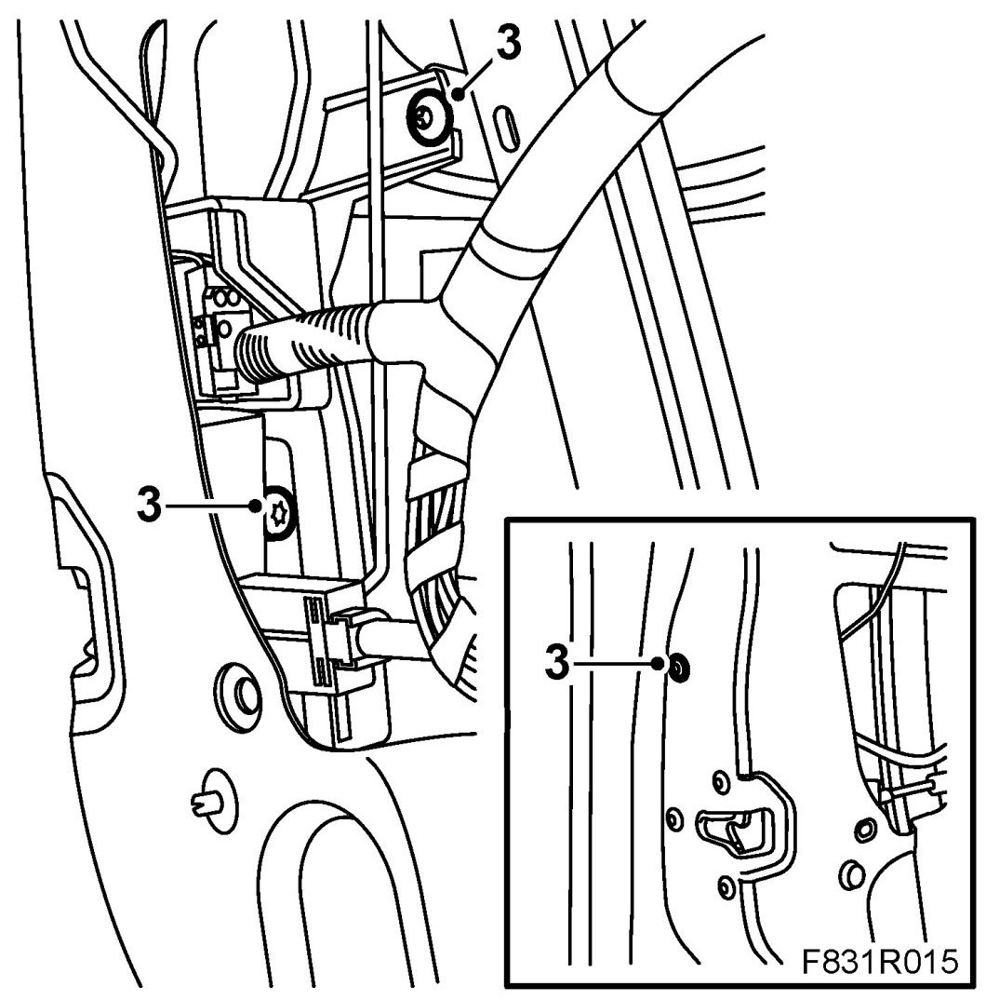
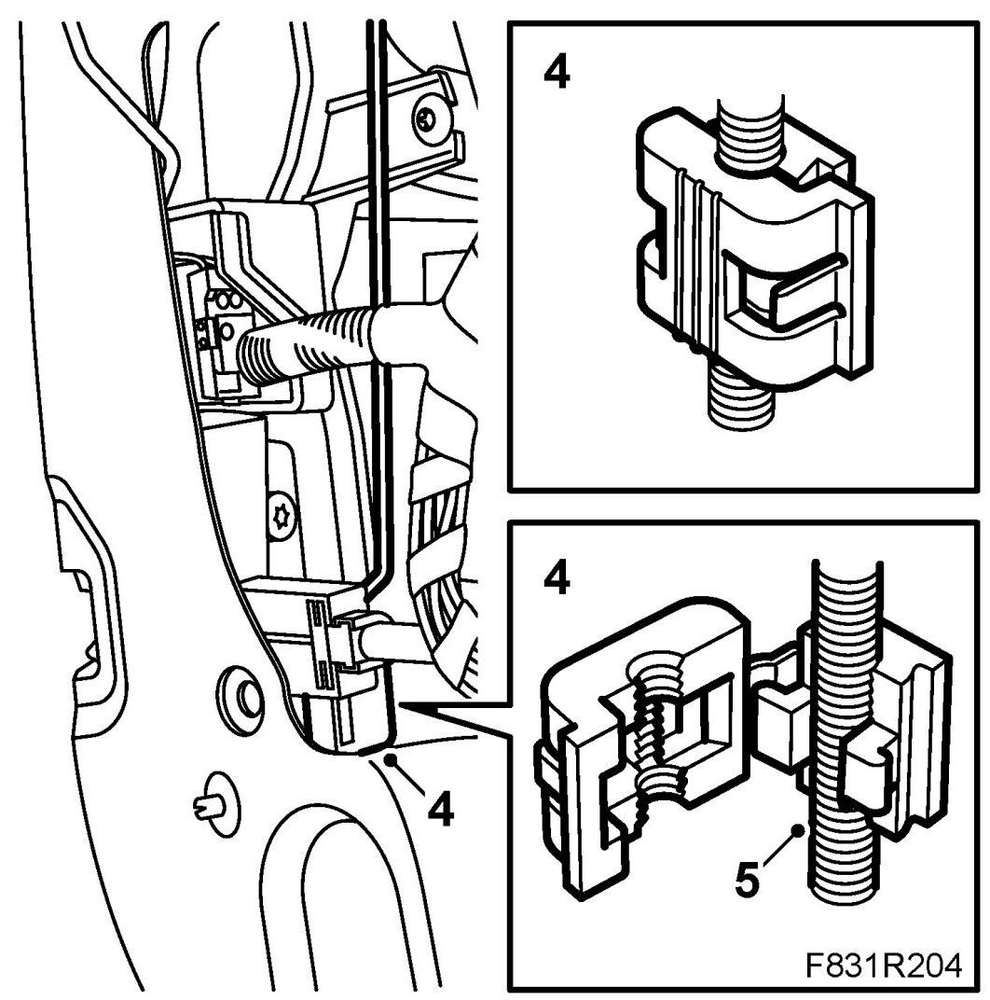
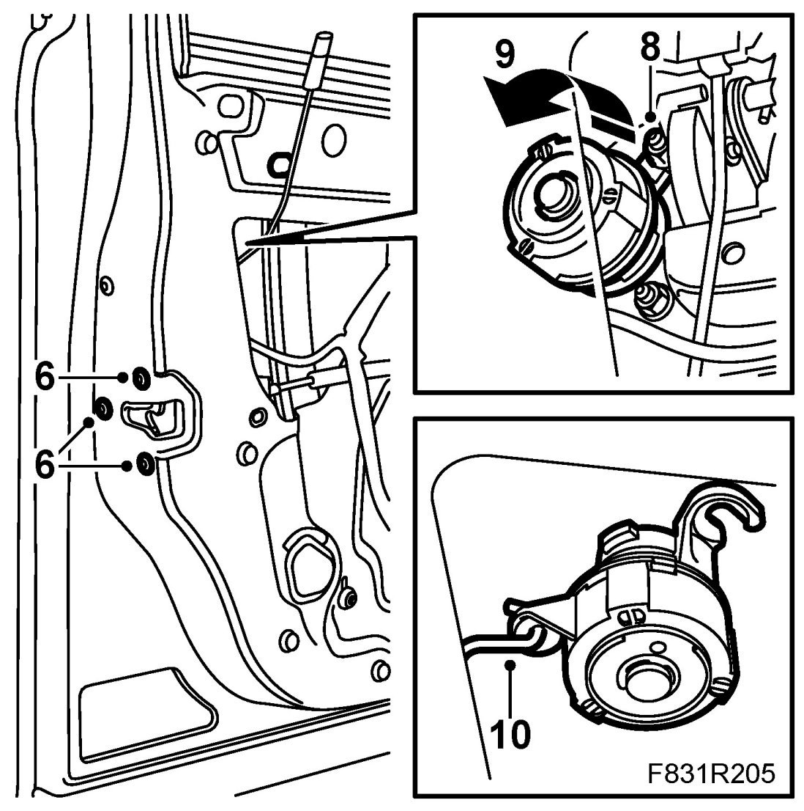
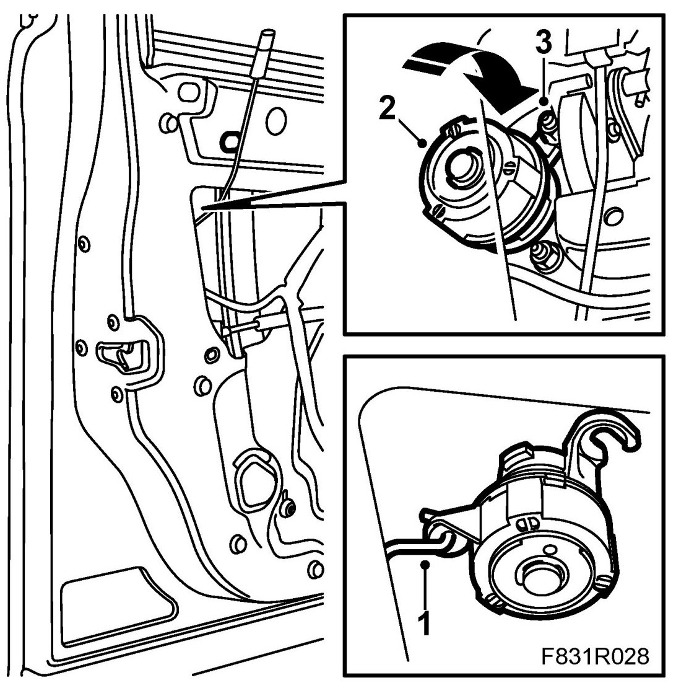
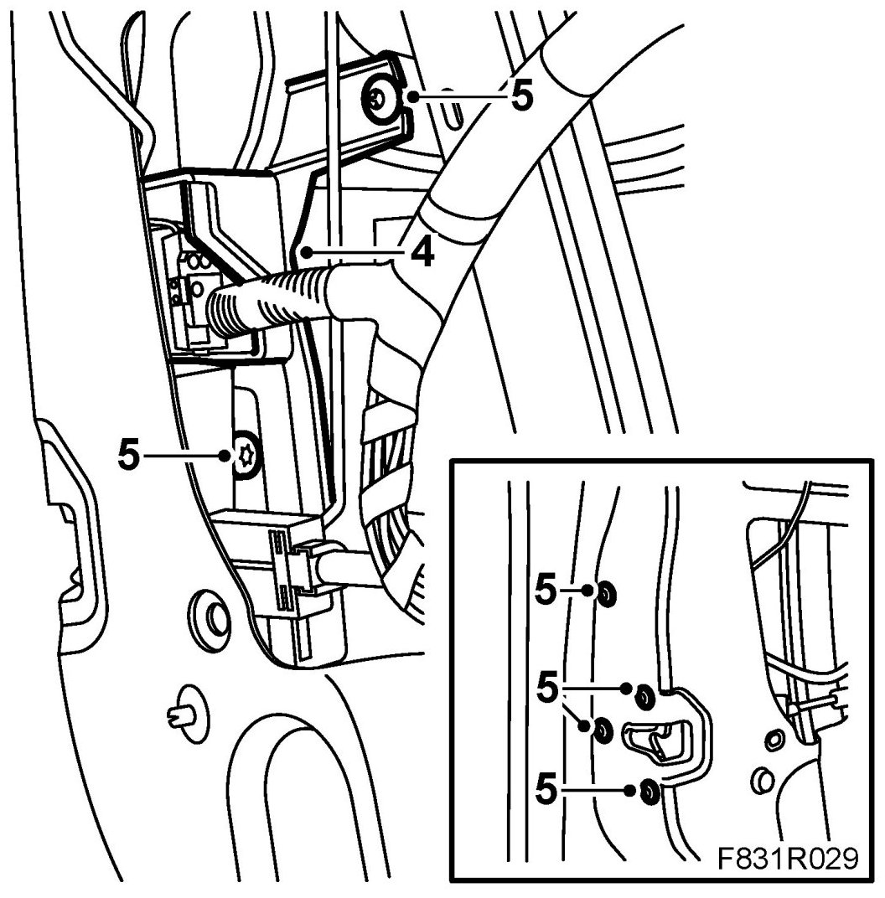
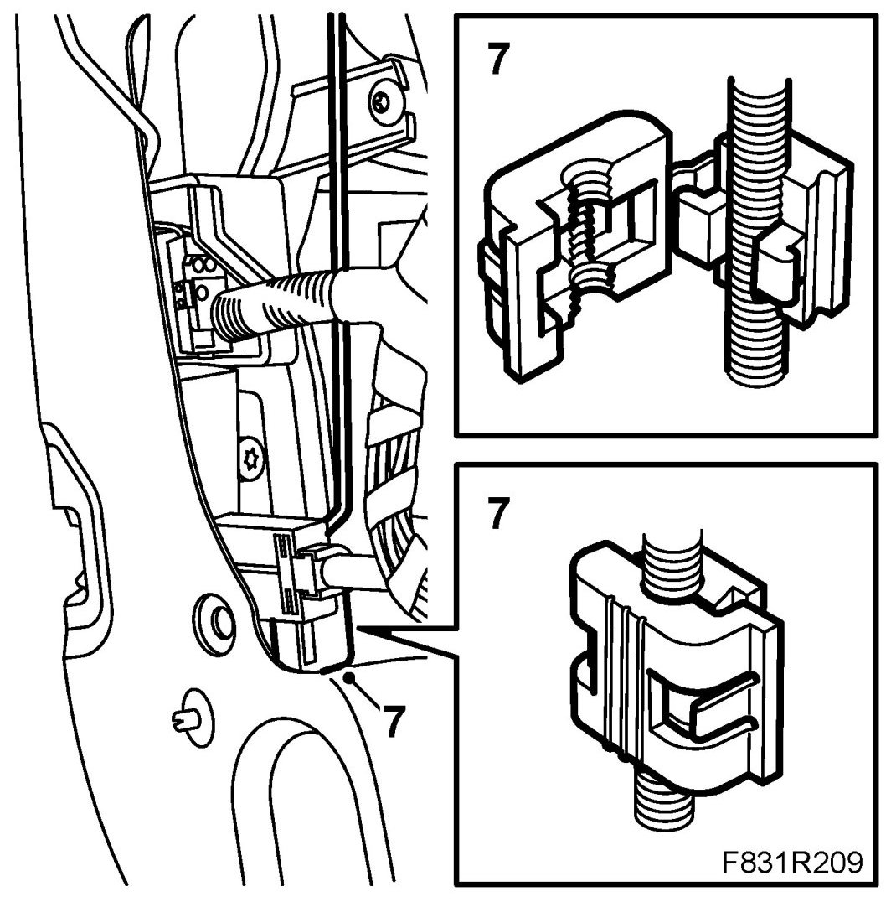

Lock Cylinder
Lock Cylinder
To remove
1. The window should be closed.
2. Remove the Front door trim, 4D and fold down the water barrier.
3. Cars with guard: Remove the guard's screws.

4. Detach the lock cover to the handle rod.

5. Loosen the handle's rod from the clip.
6. Cars with guard: Remove the bolts on the lock unit.

7. Cars with guard: Remove the guard by coaxing it out.
8. Fit the upper rear nut to the handle and lock cylinder.
9. Turn the lock cylinder anticlockwise and pull out the cylinder from the handle.
10. Unhook the lock cylinder from the lock rod.
To fit
1. Hook the lock cylinder on the rod.

2. Fit the lock cylinder by pushing the lock cylinder and turning it clockwise.
3. Fit the upper rear nut on the handle and lock cylinder.
4. Cars with guard: Place the guard in the door. Make sure the handle's rod comes in front of the guard. Lift up the cover by the rear edge so that it is placed between the lock cylinder and the window's U-strip.

5. Cars with guard: Insert the lock unit bolts and the guard bolt.
6. Cars with guard: Tighten the bolts.
7. Fit the rod in the clip. Close the lock cover to the clip.

8. Check the function of the lock, lock cylinder and the outer handle.
9. Fit the water barrier and door trim .
10. Cars with pinch protection: Perform Programming of the pinch protection.